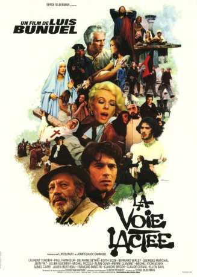
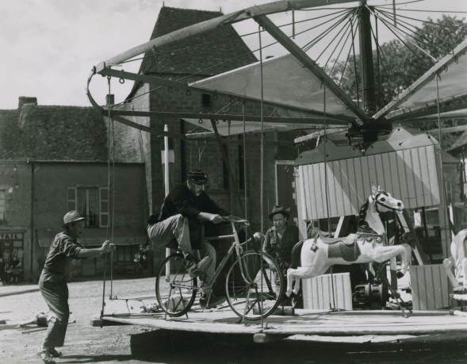
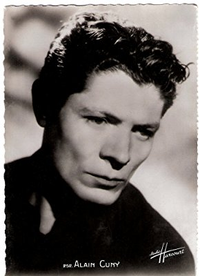
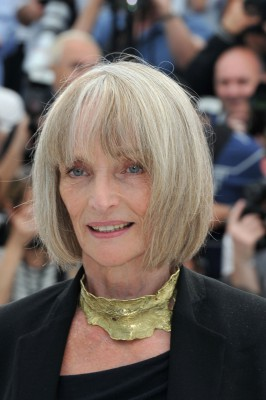
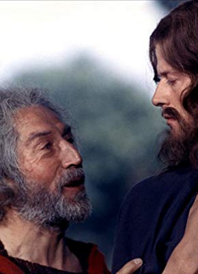
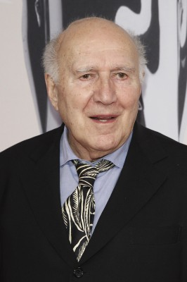
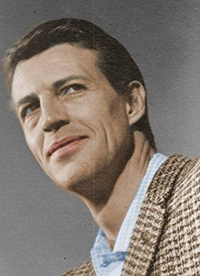
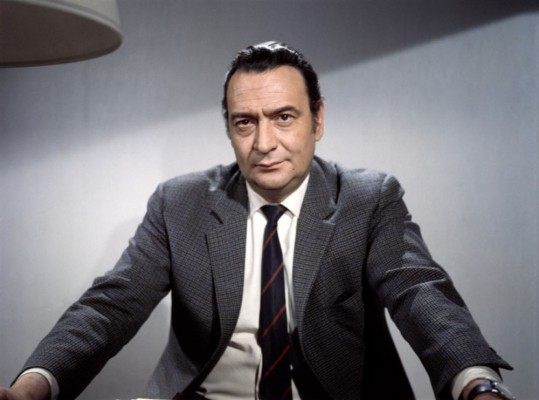
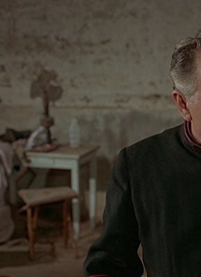
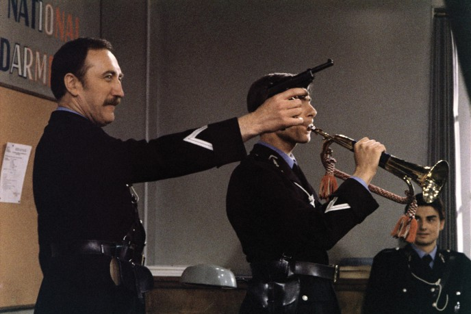

#7620 Die Milchstraße
Alternativ: The Milky Way (Englischer Titel)
 
 IMDB-Wertung: 7.6 / 10
IMDB-Wertung: 7.6 / 10  Metascore: 0
Metascore: 0 
Die beiden Clochards Pierre und Jean pilgern von Paris aus auf dem Jakobsweg, der auch „Milchstraße“ genannt wird, in den spanischen Walfahrtsort Santiago de Compostela. Losgelöst von Zeit und Raum begegnen ihnen auf ihrem Pilgerweg historische Figuren, die verschiedene Lehren innerhalb des Christentums verkörpern. Sogar Jesus, der Marquis de Sade und der Leibhaftige zählen zu ihren Begleitern.
Jahr: 1969
Dauer: 105 Minuten
FSK: 16
Land: Frankreich Studio: Arthaus FilmverleihTonspuren:
Untertitel: Deutsch,
Auflösung: 1080p (1808x1080) Größe: 7833 MB
Genre: Drama, Komödie
Regisseur: Luis Buñuel
Drehbuch: Luis Buñuel, Jean-Claude Carrière
Soundtrack: Luis Buñuel
Darsteller:
-  Paul Frankeur als Pierre
- Laurent Terzieff als Jean
-  Alain Cuny als L'homme à la cape / Man with cape
-  Edith Scob als La Vierge Marie / Virgin Mary
-  Bernard Verley als Jésus / Jesus
- Claude Cerval als Le brigadier / Brigadier
- Muni als La mère supérieure / Mother Superior
- Julien Bertheau als Richard 'maître d'hôtel' / Maitre d'Hotel
-  Michel Piccoli als Le marquis de Sade / The Marquis
- Pierre Clémenti als L'ange de la mort / The Devil
- Georges Marchal als Le jésuite / The Jesuit
- Daniel Pilon als François, ami de Rodolphe
-  Claudio Brook als L'évêque / Bishop
-  Julien Guiomar als Le curé espagnol / Spanish priest
- Delphine Seyrig als La prostituée / The Prostitute
- Jean-Claude Carrière als Priscillian
-  Georges Douking als Le berger avec la chèvre
-  Pierre Maguelon als Le caporal de la Guardia Civil / Civil Guard Caporal
- Rita Maiden als Une fille de Priscillien
- Luis Buñuel als (uncredited)
- Christian Van Cau als Apostle Andrew (uncredited)
- François Maistre als Le curé fou / French Priest
- Ellen Bahl als Madame Garnier
- Agnès Capri als La directrice de l'institution Lamartine / Teacher
- Michel Etcheverry als L'inquisiteur / The Inquisitor
- Jean Piat als Le comte / The Jansenist
- Denis Manuel als Rodolphe, un étudiant protestant
- Marcel Pérès als Le curé de l'auberge espagnole / The Posadero
- Claudine Berg als La mère de famille / Mother
- Jose Berzosa als Le premier diacre de Priscillien
- Jean-Louis Broust als
- Stéphane Bouy als
- Auguste Carrière als La religieuse crucifiée / Sister Françoise
- Jean Clarieux als Saint-Pierre / Apostle Peter
- Béatrice Costantini als Une fille de Priscillien
- Michel Creton als Un serveur
- Raoul Delfosse als
- Jean-Michel Dhermay als
- Jean-Daniel Ehrmann als Le condamné / Condemned man
- Pascal Fardoulis als
- Gabriel Gobin als Father
- Claude Jetter als La Vierge de l'auberge espagnole
- Marius Laurey als L'aveugle / Second blind man
- Bernard Musson als L'aubergiste français / Innkeeper
- Paul Pavel als
- Douglas Read als
- Jacques Rispal als
- Jacqueline Rouillard als L'hôtesse
- Christine Simon als La jeune fille enchaînée
- César Torres als
Datei: X:\1969\Milchstraße, Die (1969, FSK16, 1808x1080).mkv seit 29.11.2017
Festplatte: HD 1900-1970
 Es gibt insgesamt 22 Filme in der Gruppe '1969'
Es gibt insgesamt 22 Filme in der Gruppe '1969'